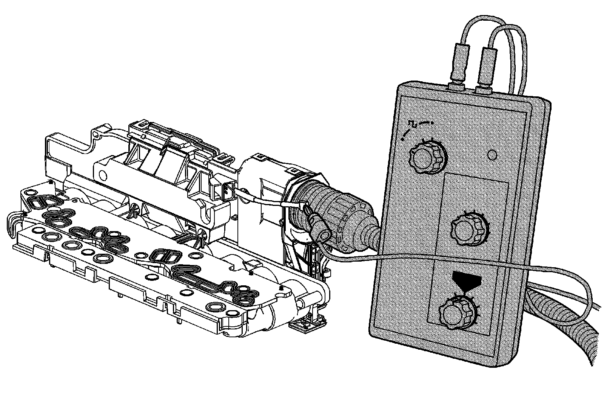

Control Solenoid Valve and Transmission Control Module Assembly Input Shaft Speed/Output Shaft Speed Input Test
Control Solenoid Valve and Transmission Control Module Assembly Input Shaft Speed/Output Shaft Speed Input Test
Tools Required
* J 35616 GM-Approved Terminal Test Kit
* J 38522 Variable Signal Generator
Control Solenoid Valve and Transmission Control Module Assembly Input Shaft Speed/Output Shaft Speed Input Test:

The purpose of this test is to provide a simulated input/output speed sensor (ISS/OSS) signal to the control solenoid (w/body and TCM) valve assembly ISS/OSS input circuits.
1. Disconnect the ISS/OSS wiring harness connector from the control solenoid (w/body and TCM) valve assembly.
2. Using the J 35616 , connect the J 38522 to the affected ISS or OSS signal circuit on the control solenoid (w/body and TCM) valve assembly.
1. Set the J 38522 Signal to 8 volts, the Frequency to 120 and the Percent Duty Cycle to 50.
2. Ignition On, observe either the scan tool parameter ISS Signal or OSS Signal.
3. The signal parameter should display between 100-400 RPM.
If the signal display is not in this range, the control solenoid (w/body and TCM) valve assembly is not reading the input signal correctly and is faulty.